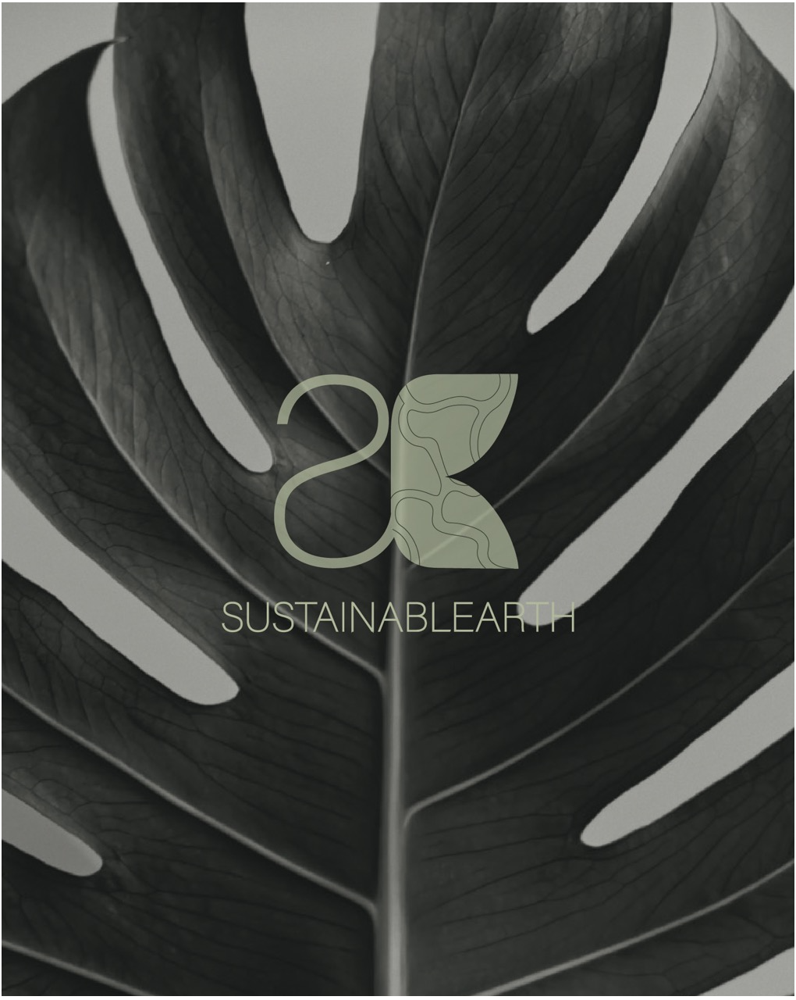
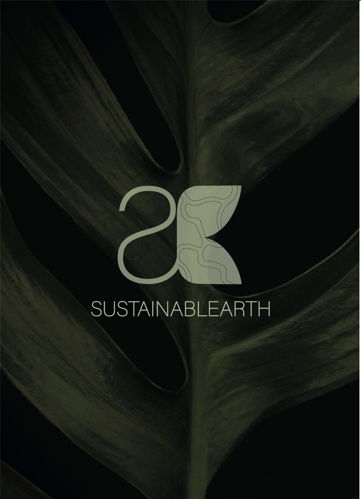

Sustainablearth is an environmental consultancy committed to assessing and managing the environmental impact of human activities, with a particular focus on supporting small and medium-sized businesses in Africa.
The organization's mission revolves around promoting responsible development through ecosystem restoration, risk management, and environmental education. With values deeply rooted in sustainability, Sustainablearth empowers individuals and businesses to embrace sustainable practices through pragmatic, actionable solutions and an inclusive, transparent approach.
This was our first time creating a full visual identity for an actual client, and doing it in university made it even more exciting. We got to take what we'd learned in class and apply it to a real-world project that's all about positive environmental impact.

